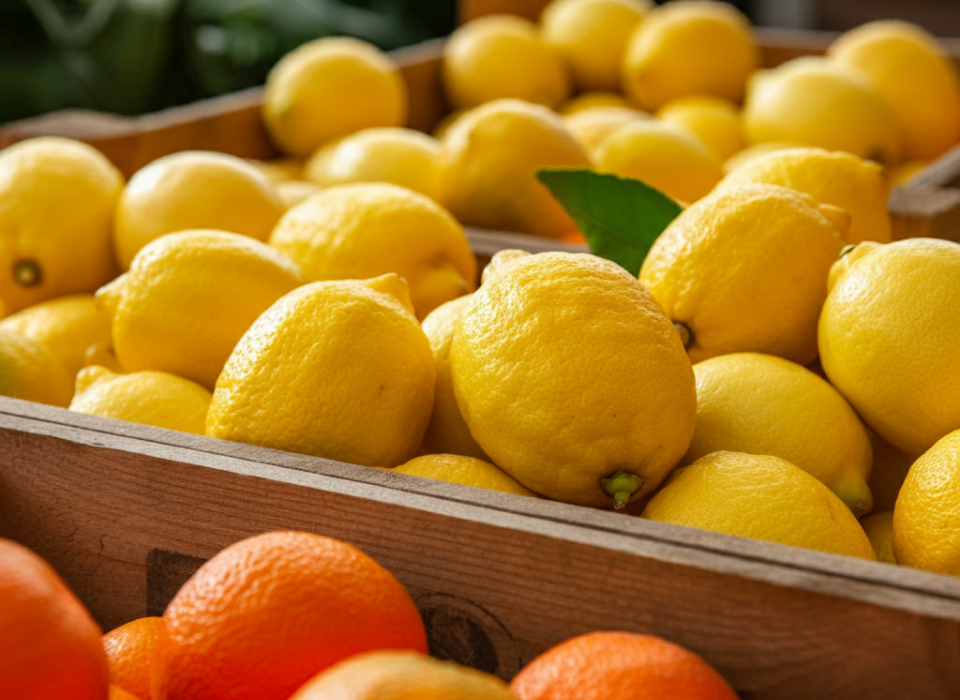
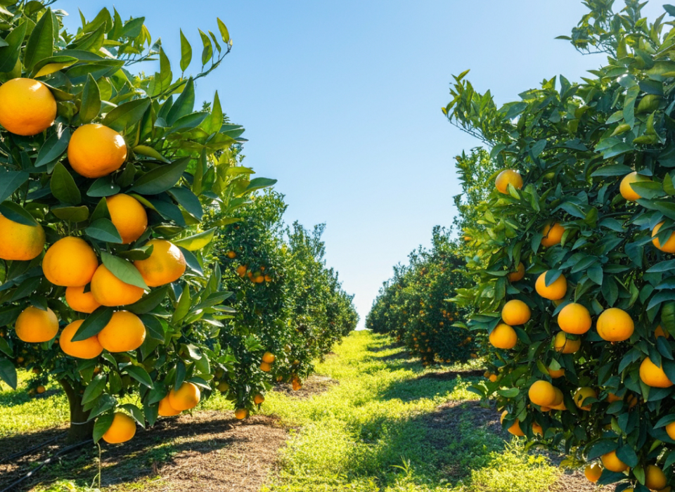
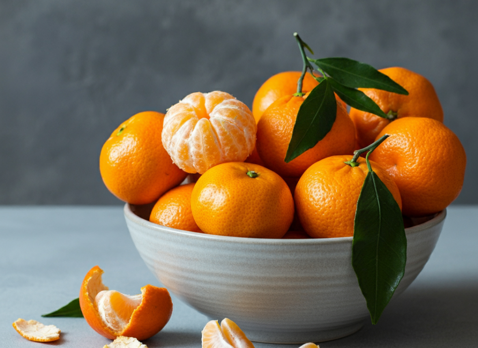
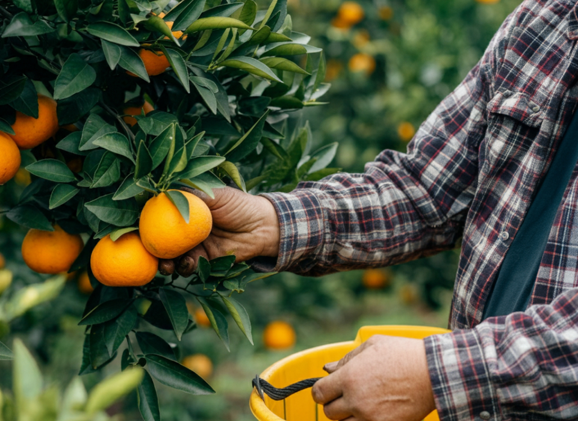

우리는 성장합니다.아주 단순하죠. 협동조합으로서,
커뮤니티로서,농부로서, 가족으로서,
사람으로서. 고개를 들고 발은 땅에 단단히 고정한 채 더 밝은
내일을 꿈꿉니다. 오늘보다 더 나은 내일을 위해 노력합니다. 해마다
우리의 속도로 함께 나아가는 것, 그것이 썬키스트의 방식입니다.

citrus
시트러스, 그 이상
우리는 캘리포니아와 애리조나 감귤 재배자들이 소유하고 운영하는
비영리 협동조합입니다. 그러나 우리는 감귤류 이상의 것들에 대해
이야기합니다. 설명해드릴게요.

sustainability
우리의 관심은 지속가능성
우리는 자연이라는 존재에 대해 늘 생각합니다. 그리고 우리는 자연을
올바르게 대하고자 노력합니다. 우린 태양열 발전, 저공해 차량 및
절수 관개 시스템과 같은 지속 가능한 방식을 채택했습니다. 우리의
모든 선택은 항상 자연을 지키는 방향일 것입니다.

Quality
품질을 지키는 것은 우리의 기본
품질이 떨어지는 시트러스에 실망한 적 있나요? 썬키스트와 함께라면
그럴 일은 없을 거에요.우리는 가장 높은 품질의 제품을 제공하기 위해
매일 최선을 다하고 있습니다. 썬키스트에선 최고의 시트러스만을 만날
수 있도록, 품질은 우리가 타협할 수 없는 기본입니다.

organic farming
자랑스런 유기농 시트러스
많은 사람들이 구매한 식품이 최대한 유기농이기를 원합니다. 썬키스트
재배자 중 일부는 USDA 인증 유기농 감귤의 자랑스러운 공급자가
되었습니다. 즉, 해충 살충제를 쓰지 않는다는 말이죠. 보이는 그대로
유기농입니다.